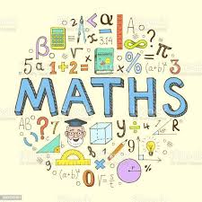

Chapters
- Numbers and Numeration
- Fractions and Decimals
- Geometry and Shapes
- Measurements
- Data Handling
- Perimiter and Area

Mathematics is far more than a collection of numbers and formulas found in a textbook; it is the fundamental language we use to decode the structure of the universe. From the precise geometry required to construct skyscrapers to the complex algorithms that power our digital world, math provides the essential framework for innovation and structural integrity. By understanding mathematical principles, we gain the ability to predict patterns and solve intricate problems that affect everything from global economics to space exploration.
Beyond its technical applications, math is a vital tool for developing critical thinking and logical reasoning skills. It teaches us how to approach a challenge with a structured mindset and find evidence-based solutions.
On a daily basis, mathematics empowers individuals to make informed decisions and manage their lives effectively. Whether it is calculating the trajectory of a project, managing a personal budget, or understanding the probability of a specific outcome, math provides a sense of certainty in an uncertain world. It is a universal skill that bridges cultures and industries, serving as a constant foundation for both personal success and collective human progress.
| x | 1 | 2 | 3 | 4 | 5 | 6 | 7 | 8 | 9 | 10 |
|---|---|---|---|---|---|---|---|---|---|---|
| 1 | 1 | 2 | 3 | 4 | 5 | 6 | 7 | 8 | 9 | 10 |
| 2 | 2 | 4 | 6 | 8 | 10 | 12 | 14 | 16 | 18 | 20 |
| 3 | 3 | 6 | 9 | 12 | 15 | 18 | 21 | 24 | 27 | 30 |
| 4 | 4 | 8 | 12 | 16 | 20 | 24 | 28 | 32 | 36 | 40 |
| 5 | 5 | 10 | 15 | 20 | 25 | 30 | 35 | 40 | 45 | 50 |
| 6 | 6 | 12 | 18 | 24 | 30 | 36 | 42 | 48 | 54 | 60 |
| 7 | 7 | 14 | 21 | 28 | 35 | 42 | 49 | 56 | 63 | 70 |
| 8 | 8 | 16 | 24 | 32 | 40 | 48 | 56 | 64 | 72 | 80 |
| 9 | 9 | 18 | 27 | 36 | 45 | 54 | 63 | 72 | 81 | 90 |
| 10 | 10 | 20 | 30 | 40 | 50 | 60 | 70 | 80 | 90 | 100 |